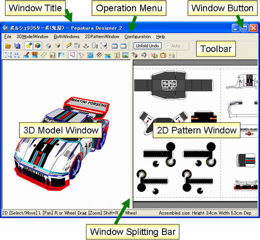

The following image shows the screen layout of Pepakura Designer.

| 3D Model Window | An area to display a 3D model. You can view the model from various angles. |
|---|---|
| 2D Pattern Window | An area to display a 2D pattern (development).You can perform various edit operations on the development. |
| Window Title | The title of the editing file. |
| Operation Menus | The items necessary to operate Pepakura Designer are stored here. |
| Toolbar | Frequently used functions are shown as icons. |
| Status Bar | A simple description of the operation is shown. Use this as a operation guide. |
| Window Splitting Bar | Adjusts the view areas for 3D model window and 2D pattern window. |
| Window Buttons | Operates Pepakura Designer's application window. |